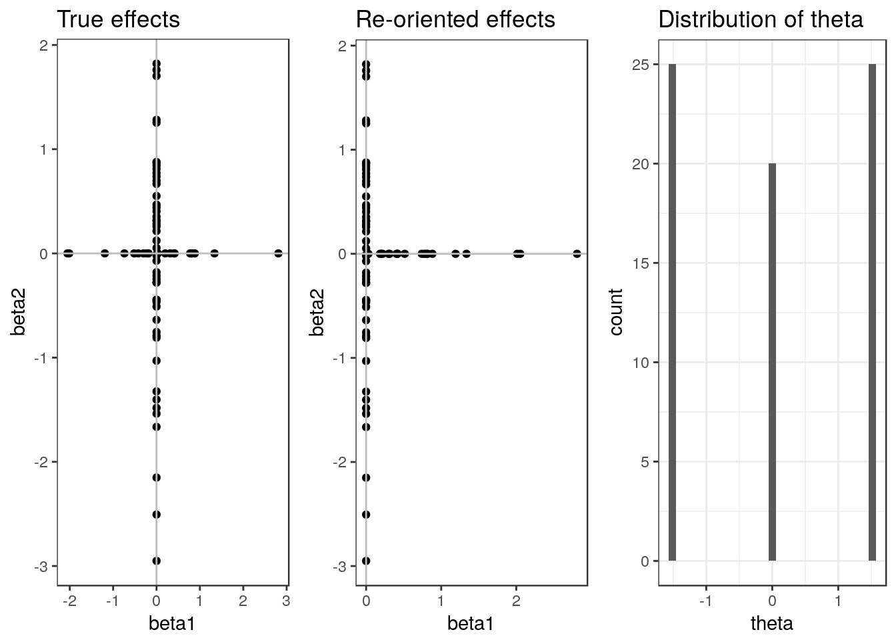
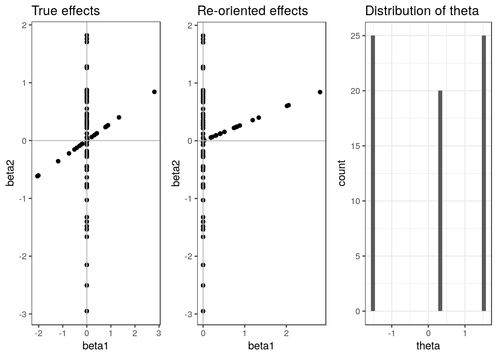
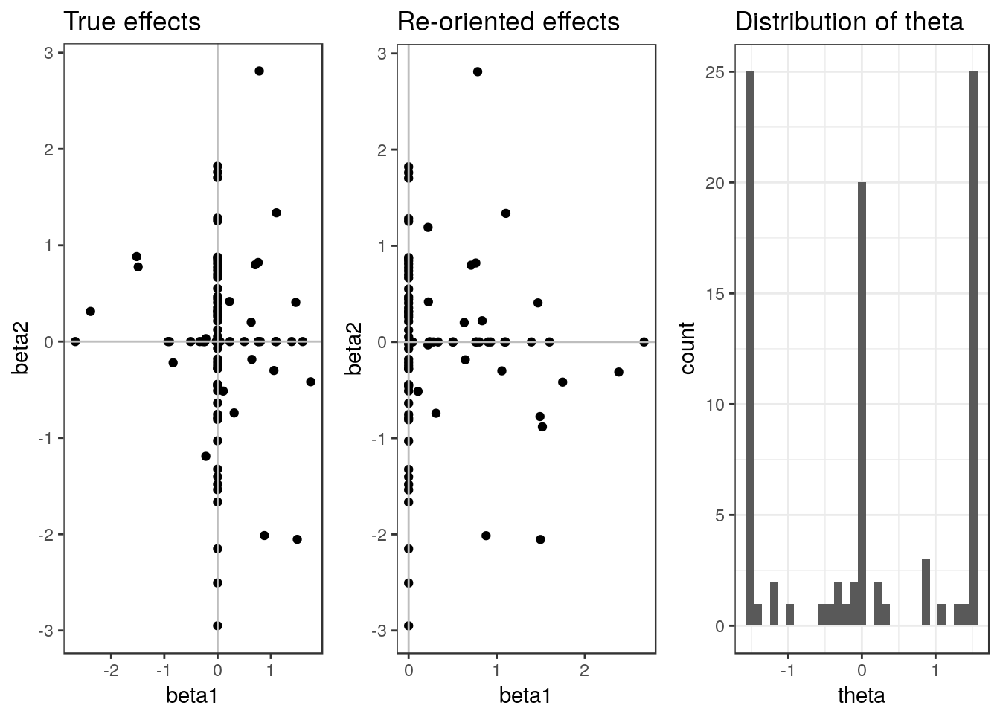
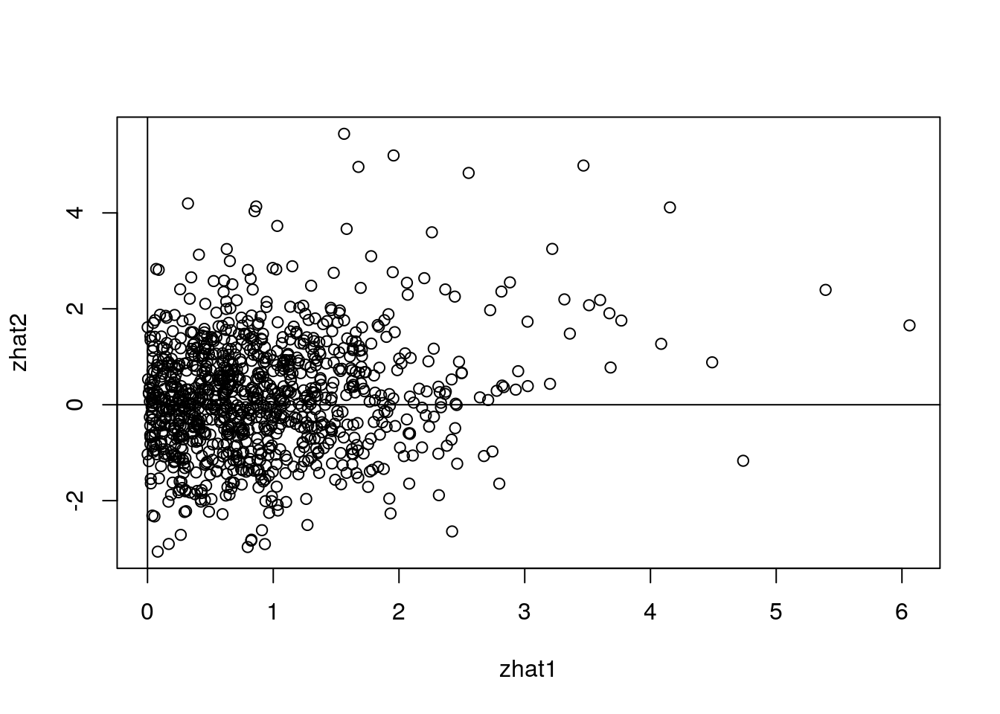
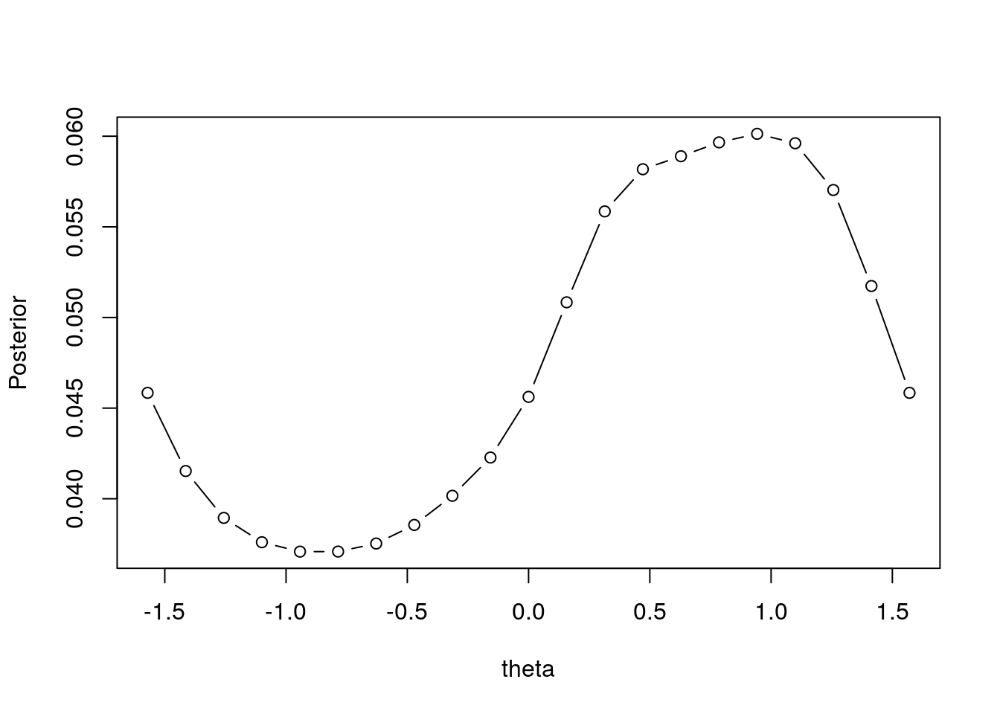
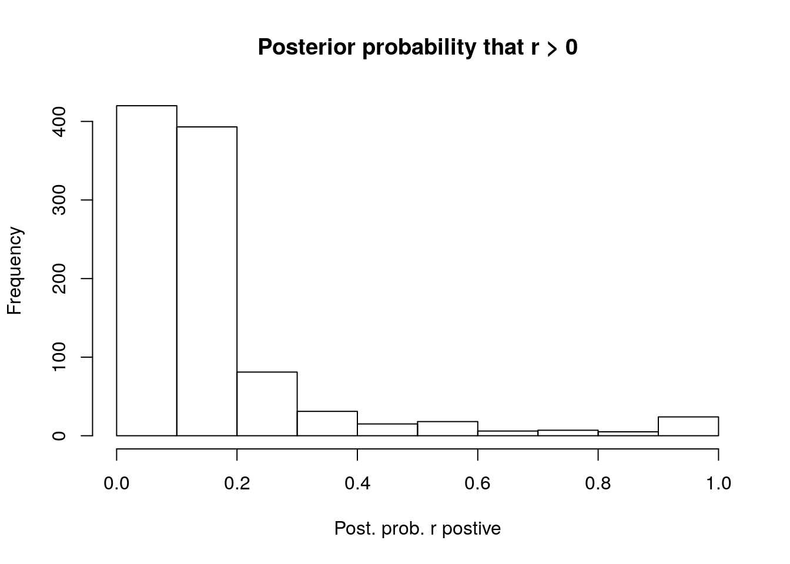
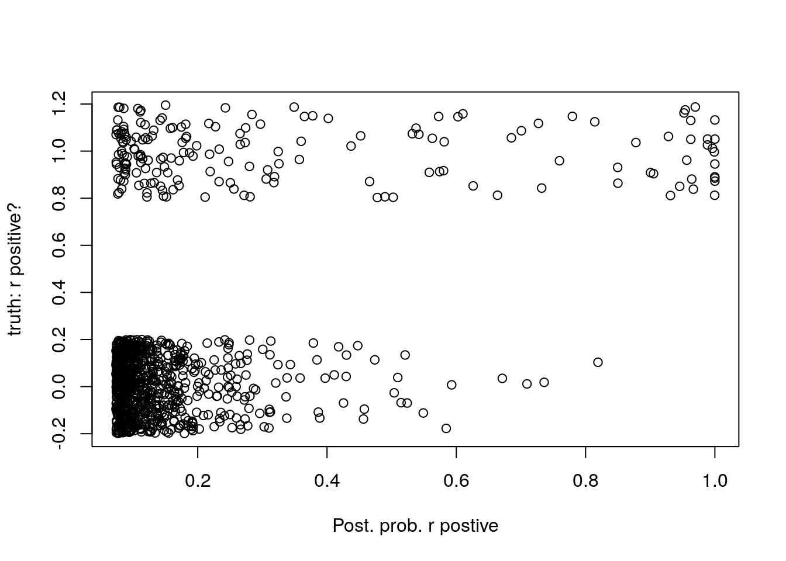
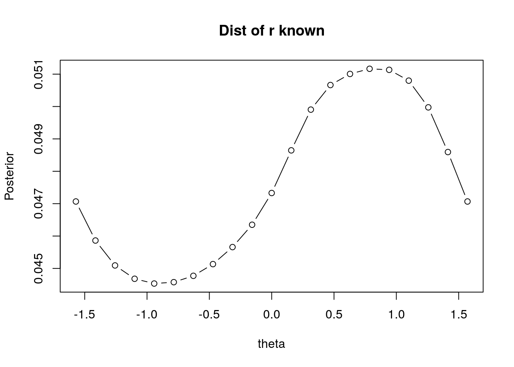
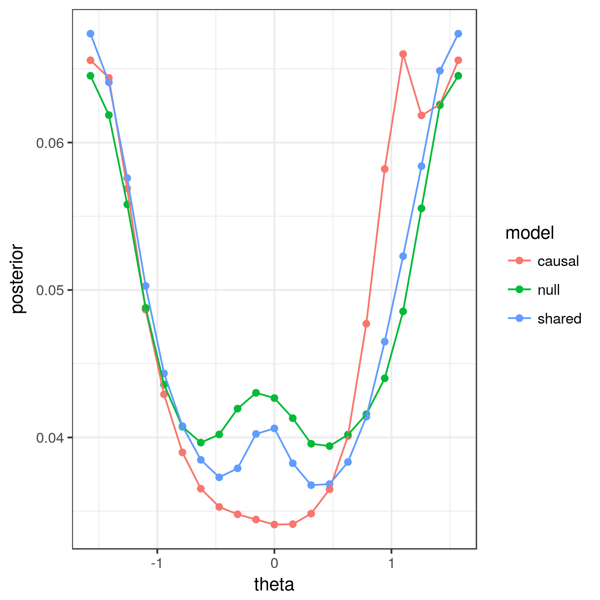

This document describes some first explorations of a new approach to the problem of understanding patterns of genetic sharing using association summary statistics for a pair of traits.
Let \(\beta_{i,j}\) and \(\hat{\beta}_{i,j}\), \(i \in 1, \dots, p\), \(j=1,2\) be the true and estimated marginal effect sizes for SNPs \(i\) on trait \(j\). The motivating idea for this approach is that if we knew \(\beta_{i,j}\), we could summarize the pattern of genetic sharing between the two traits by looking at the distribution of \(\beta_{i,1}/\beta_{i,2}\) or equivalently, by summarizing the distribution of the angle between pairs of effects and the \(x\)(trait 1)-axis, \(\theta_i = tan^{-1}(\beta_{i,2}/\beta_{i,1})\). There are some advantages to focusing on the distribution of \(\theta_i\): i) It’s support is finite, between \(-\pi\) and \(\pi\) and ii) If the true effect sizes are sparse and some SNPs effect only trait 2 then the distribution of the ratio has positive mass at \(\infty\).
If the true effect sizes are sparse, there will be many SNPs for which \(\beta_{i,1} = \beta_{i,2} = 0\). In polar coordinates, this is equivalent to the condition that \(r_i \equiv \sqrt{\beta_{i,1}^{2} + \beta_{i,2}^2} = 0\). In this case, \(\theta_i\) is not defined and the SNP is irrelevant to our question. Theferore, the distribution that is of most interest is actually the conditional distribution of \(\theta \vert r > 0\).
Since, in most cases, the allele coding for each SNP is aribitrary, we can simplify the problem by constraining \(\theta\) to lie between \(-\pi/2\) and \(\pi/2\). Changing the allele coding is equivalent to increasing (or decreasing) the angle of the pair of effects by \(\pi\). That is, if the pair \((\beta_{i,1}, \beta_{i,2})\) has an angle of \(\pi/5\) and we flip the minor and major allele, the new pair of effects will have an angle of \(-4\pi/5\). Thus, it is reasonable to assume that \(p[\theta_i = t] = p[\theta_i = t + \pi]\). Without losing any information, we can choose to orient all the SNPs so that \(\beta_{i,1}\) is positive constraining \(\theta_i\) to the interval \([-\pi/2, \pi/2]\).
Before discussing methods to estimate the distribution of \(\theta\) from summary staistics, I explore some possible patterns and how they might be interpreted.
If there is no sharing between the two traits and no pleiotropy then all of the true effects will be zero for one or both traits. This means that for every SNP, \(\theta_i = 0\) (the SNP effects only trait 1) or \(\theta_i = \pm \pi/2\) (the SNP effects only trait 2).

Observing many SNPs with \(\theta_i\) between 0 and \(\pi/2\) indicates that there is positive genetic correlation bewteen the traits while many SNPs with \(\theta_i\) between 0 and \(-\pi/2\) indicates negative correlation between the traits.
In trait 1 directly, causally effects trait 2 and there are no additional pleiotropic effects then we expect there to be a constant \(\lambda\) such that \(\beta_2 = \lambda \beta_1\) whenever \(\beta_1 \neq 0\). There may be SNPs that effect trait 2 through other mechanisms, but all SNPs effecting trait 1 should also have a non-zero effect on trait 2. This pattern looks like this:

We see that there mass at zero but there is a spike between 0 and \(\pi/2\). If trait 2 causally effects trait 1, we expect to observe no mass at \(\pm \pi/2\).
If there is no causal relationship between the traits but they share many regulatory factors in common, we might expect there to be many pleiotropic SNPs with non-zero effects on both traits. We would still expect to see many SNPs effecting only one of the two traits and there may not be a consistent direction or ratio of effects sizes.

Under this sharing pattern, there is positive mass at both 0 and \(\pm \pi/2\) but there are some effects distributed between these values as well.
By looking at these patterns, we see that there are several important pieces of information we can learn from the distribution of \(\theta_i \vert r_i > 0\):
We start by writing the joint pdf of \(\hat{r_i}\) and \(\hat{\theta_i}\) given \(r_i\) and \(\theta_i\). We assume that \(\hat{\beta_{i,j}} \sim N(\beta_{i,j}, s_{ij}^2)\) and that \(\beta_{i,j}\) are independent both across SNPs and across traits. Later we can relax the need for independence across traits to account for shared samples.
In order to simplify the likelihood, we modify our earlier definitions of \(r\),\(\hat{r}\), \(\theta\), adn \(\hat{\theta}\) to be defined in terms of \(z\)-scores rather than effect sizes: \(\hat{r}_i = \sqrt{ \hat{z}_{i,1}^{2} + \hat{z}_{i,2}^2}\) and \(\hat{\theta} = tan^{-1}(\hat{z}_{i,2}/\hat{z}_{i,1})\) where \(z_{i,j} = \hat{\beta}_{i,j}/s_{i,j}\). With this modification, the interpretation of values of \(\theta_i\) close to 0 and \(\pm \pi/2\) remains the same.
If SNPs have approximately the same allele frequency between the two studies then \(s_{i,1} \approx k\cdot s_{i,2}\) for some sample \(k\) dependent on the sample sizes of the two studies. In this case, we would still expect a sharp peak in the distribution of angles of \(z\)-scores in the case of a causal relationship. However, if the studies have different allele frequencies, there could be circumstances where many SNPs have the same angle on the effect size scale but somewhat different angles on the \(z\)-score scale. If this difference becomes important, we may be able to implement a more complicated likelihood later.
With these defninitions and assumptions, we can write \[ p(\hat{r}_i, \hat{\theta}_i \vert r_i , \theta) = \frac{\hat{r}_i}{2\pi} \exp \left( \frac{-1}{2}\left( \hat{r}_i^2 + r_i^2 - 2\hat{r}r\cos(\hat{\theta}_i-\theta_i) \right) \right)\]
We model the prior distribution of \(r\) as a mixture of \(L+1\) uniform distributions with left edge of support at 0: \[ r \sim \gamma_0 \delta_0 + \sum_{i=1}^{k}\gamma_k U(r, 0, b_l).\]
The mixture parameters \(\gamma_0, \dots, \gamma_K\) are hyper-parameters summing to 1 that can estimated emprically from the data following the ASH framework (discussed more later). We reduce distribution of \(\theta_i \vert r_i >\) to a grid of values \(\theta^{(1)}, \dots, \theta^{(L)} \in [-pi/2, \pi/2]\). We could place a uniform prior on these values or we could put more prior weight on \(0\) and \(\pm \pi/2\) reflecting our prior belief that most effect SNPs are not shared. Define \(p(\theta_i = \theta^{(l)} \vert r_i > 0) = \alpha_l\).
We assume that \(r\) and \(\theta\) are independent. This assumption is likely to be false since we expect the distribution of \(z\)-scores for the two traits to be different. However, our focus is on the distribution of \(\theta\) so it is possible that our estimates may not be too sensitive to this assumption.
For each SNP, we can estimate the posterior distribution of \(\theta_i\). Note that since \(\theta\) is not defined when \(r = 0\), \(p[\theta_i = \theta^{(l)}] = P[\theta_i = \theta^{(l)}, r_i > 0]\). So \[ P(\theta_i = \theta^{(l)}, r_i > 0 \vert \hat{r}_i, \hat{\theta}_i) = P(\theta_i = \theta^{(l)} \vert \hat{r}_i, \hat{\theta}_i, r_i > 0)P(r_i > 0 \vert \hat{r}_i)\] Note that the posterior distribution of \(r\) depends only on \(\hat{r}\). This will be discussed further on. For SNP \(i\), the posterior probability that \(\theta_i \theta^{(l)}\) conditional on \(r_i >0\) is \[ P(\theta_i = \theta^{(l)} \vert \hat{r}_i, \hat{\theta}_i, r_i > 0) \propto P(\hat{r}_i, \hat{\theta}_i \vert \theta_i=\theta^{(l)}, r_i > 0) P(\theta = \theta^{(l)} \vert r > 0)\] where \[ P(\hat{r}, \hat{\theta} \vert \theta^{(l)}, r > 0) = \frac{1}{\sum_{k=1}^{K}\gamma_k} \sum_{k=1}^{K} \frac{\gamma_k}{b_k}\int_{0}^{r}P(\hat{r}, \hat{\theta} \vert r, \theta=\theta^{(l)}) dr\] We can compute the integral above numerically. From these, we can find the posterior probability that any SNP has angle \(\theta^{(l)}\) as
\[ P(\theta = \theta^{(l)}) = \sum_{i=1}^{p} P(\theta_i = \theta^{(l)} \vert \hat{r}_i, \hat{\theta}_i, r_i > 0) P(r_i > 0 \vert \hat{r}_i) \] These can then be normalized to the conditional probabilities \(P(\theta = \theta^{(l)}\vert r > 0)\).
The marginal pdf of \(\hat{r}\) given \(r\) and \(\theta\) does not depend on \(\theta\) and can be written as \[ p(\hat{r}_i \vert r_i ) = \hat{r}\exp\left(\frac{-1}{2}\left(\hat{r}^{2} + r^{2}\right)\right)I_0(\hat{r}r) \] Where \(I_o\) is the modified Bessel function of order 0 \(I_0(x) = \int_0^{2\pi}e^{x\cos(\theta)}d\theta\).
With this likelihood, we can estimate \(\gamma_0, \dots, \gamma_K\) by maximizing the likelihood \[ L(\gamma) = \prod_{i=1}^p \left( \gamma_0 p(\hat{r}_i \vert r_i = 0 ) + \sum_{k=1}^{K}\frac{\gamma_k}{b_k} \int_{0}^{b_k} p(\hat{r}_i \vert r) dr \right) \] with a penalty encouraging more weight to \(\delta_0\).
From this, we compute the posterior probability that \(r_i > 0\) as \[ \frac{\sum_{k=1}^{K}\frac{\hat{\gamma}_k}{b_k} \int_{0}^{b_k} p(\hat{r}_i \vert r) dr}{\hat{\gamma}_0 p(\hat{r}_i \vert r_i = 0 ) + \sum_{k=1}^{K}\frac{\hat{\gamma}_k}{b_k} \int_{0}^{b_k} p(\hat{r}_i \vert r) dr}. \]
We start with a few simple experiments in which \(r\) actually follows a mixture of uniform distribution and the signal is strong:
Example 1: theta uniformly distributed between 0 and \(pi/2\):
library(bvpolar)
library(matrixStats)
set.seed(16382)
g0 <- list("pi"=c(0.8, 0.1, 0.1), a=rep(0, 3), b=c(0, 2, 5))
class(g0) <- "unimix"
#generate true radius
r <- runimix(n=1000, g=g0)
#generate true angle
theta <- runif(1000, 0, pi/2)
#generate true z values (beta/sd)
z1 <- r*cos(theta)
z2 <- r*sin(theta)
#observed z-scores
zhat1 <- rnorm(1000, z1, 1)
zhat2 <- rnorm(1000, z2, 1)
#Re-orient so that zhat1 > 0:
zhat2 <- sign(zhat1)*zhat2
zhat1 <- abs(zhat1)
#observed polar coordinates
rhat <- sqrt(zhat1^2 + zhat2^2)
thetahat <- atan2(zhat2, zhat1)
plot(zhat1, zhat2); abline(h=0, v=0)
#Estimate gammas
fit_r <- polar_est_r_mixture_uni(rhat, g=NULL, prior=NULL)## 1 2 3 4 5 6 7 8 9 10 11 12 13 14 15 16cbind(fit_r$fitted_g$b, fit_r$fitted_g$pi)[zapsmall(fit_r$fitted_g$pi) > 0,]## [,1] [,2]
## [1,] 0.000000 0.82929364
## [2,] 2.192724 0.03003493
## [3,] 3.100981 0.09776576
## [4,] 4.385449 0.01284735
## [5,] 6.201961 0.03005832We have done an ok job of recovering the distribution or \(r\).
#Estimate thetas
tvals <- seq(-1/2, 1/2, length.out=21)*pi
tprior <- rep(c(10, 1, 10, 1, 10), c(1, 9, 1, 9, 1))
fit_t <- polar_est_t(rhat, thetahat, fit_r, tvals, tprior, orient=T)## 1 2 3 4 5 6 7 8 9 10 11 12 13 14 15 16 17 18 19 20 21plot(tvals, fit_t$mix_overall, type="b", xlab="theta", ylab="Posterior")
We have successfuly recovered a pattern indicating that most values of theta are between 0 and \(\pi/2\). We can also look at the distribution of estimates of \(p(r_i > 0 \vert \hat{r}_i)\).
#Estimate thetas
hist(fit_t$wts, xlab="Post. prob. r postive", main="Posterior probability that r > 0")
plot(fit_t$wts, jitter(as.numeric(r > 0)), xlab="Post. prob. r postive", ylab="truth: r positive?")
We can also see how we would have done if we knew the distribution of \(r\):
fit_r_oracle <- fit_r
fit_r_oracle$fitted_g <- g0
fit_t_oracle <- polar_est_t(rhat, thetahat, fit_r_oracle, tvals, tprior, orient=T)## Warning in pihat * matrix_lik: longer object length is not a multiple of
## shorter object length## 1 2 3 4 5 6 7 8 9 10 11 12 13 14 15 16 17 18 19 20 21plot(tvals, fit_t_oracle$mix_overall, type="b", xlab="theta", ylab="Posterior", main="Dist of r known")
These results are quite similar.
In another example, we analyze simulated data produced for previous simulations. These were produced under the sharing model parameterized by \(q\) and \(b\) described here: https://jean997.github.io/sh2Ash/mh_test.html. I looked at only three realizations generated from this model. One is produced under the “null” model in which \(q = 0\) and any shared effects between the traits are random (and rare). One is produced under the causal model in which \(q = 1\) and \(b = 0.5\) (a fairly strong effect) and one is produced under a model with some sharing, with \(q = 0.2\) and \(b=0.5\).
Posterior distributions of \(\theta\) for the three examples are shown below:

Encouragingly, the estimates for the causal model have much less mass at zero than the estimates for the other two models. This provides evidence that most variants affecting trait 1 also affect trait 2. Additionally, the estimates for the causal model have a spike between 0 and \(pi/2\) indicating that many variants have a similar angle providing further evidence for a causal model. By contrast, the two non-causal simulations both have a peak at zero indicating that there are many variants indicating only trait 1.
This R Markdown site was created with workflowr